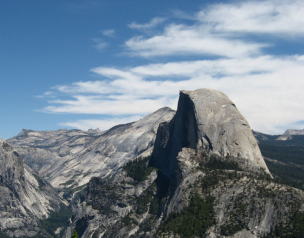

Half Dome is a granite dome in Yosemite National Park, located in northeastern Mariposa County, California, at the eastern end of Yosemite Valley. The granite crest rises more than 4,737 ft (1,444 m) above the valley floor.
This particular view is of Half Dome as seen from Washburn Point.